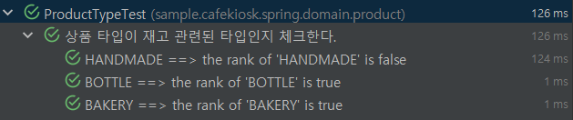

@ParameterizedTest
테스트 코드내에 if/for/분기문등이 읽는 사람이 코드를 생각하게 하는 코드를 지양 해야된다.
여러가지의 케이스 코드인데 하나의 테스트 코드에 녹여내고 싶다는 욕망이 있다보니 테스트에 분기, 반복문이 들어가게 됩니다. 여러가지 케이스 테스크 코드라서 나누는게 바람직한지 체크하는게 필요하다.
해피케이스
예외케이스
경계값
케이스 코드가 하나이지만 단순하게 값만 변경해서 테스트 코드를 작성할 때 사용합니다. 값이나 환경을 변경해가면서 테스트를 여러번 반복할수 있다. JUnit 5 User Guide
기존 방식
@DisplayName("상품 타입이 재고 관련 타입인지를 체크한다.")
@Test
void containsStockType3(){
//given
ProductType giveType1 = ProductType.HANDMADE;
ProductType giveType2 = ProductType.BOTTLE;
ProductType giveType3 = ProductType.BAKERY;
//when
boolean result1 = ProductType.containsStockType(giveType1);
boolean result2 = ProductType.containsStockType(giveType2);
boolean result3 = ProductType.containsStockType(giveType3);
//then
assertThat(result1).isFalse();
assertThat(result2).isTrue();
assertThat(result3).isTrue();
}
단일 케이스로 when에 대한 메소드가 하나이고 값에 따라 true, false인지 ProductType 타입에 대해서 확인하는 테스트 코드입니다.
CsvSource 사용
@DisplayName("상품 타입이 재고 관련 타입인지를 체크한다.")
@CsvSource({"HANDMADE,false","BOTTLE,true","BAKERY,true"})
@ParameterizedTest
void containsStockType4(ProductType productType,boolean expected){
//when
boolean result = ProductType.containsStockType(productType);
//then
assertThat(result).isEqualTo(expected);
}
@ScvSource의 값이 테스트 코드 매서드의 파라미터로 차례대로 들어옵니다. 지정한 ProductType을 받아서 when을 실행하고 검증 결과로 expected로 비교 할 수 있습니다.
MethodSource 사용
private static Stream<Arguments> provideProductTypesForCheckingStockType(){
return Stream.of(
Arguments.of(ProductType.HANDMADE,false),
Arguments.of(ProductType.BOTTLE,false),
Arguments.of(ProductType.BAKERY,false)
);
}
@DisplayName("상품 타입이 재고 관련 타입인지를 체크한다.")
@MethodSource("provideProductTypesForCheckingStockType")
@ParameterizedTest
void containsStockType5(ProductType productType,boolean expected){
//when
boolean result = ProductType.containsStockType(productType);
//then
assertThat(result).isEqualTo(expected);
}
- @MethodSource
팩토리 매서드,정규화된 매서드 이름을 통해 테스트 코드에 전달
스트림 다양한 유형 사용 가능 : Stream, DoubleStream 등
Arguments의 하나의 세트당 개별 물리적 인수로 처리합니다.
즉, 배열의 각 항목이 테스트 메서드의 각 매개변수에 대응됩니다.
보통 프로덕션 코드에서는 private method는 맨 아래에 관리를 하지만, 테스트 코드에서는 given의 역할이기 때문에 테스트 코드 위에서 관리합니다.
위 2개 방식을 주로 사용합니다.
Customizing Display Names
@CsvSource 사용할 경우
@DisplayName("상품 타입이 재고 관련된 타입인지 체크한다.")
@ParameterizedTest(name = "{0} ==> the rank of ''{0}'' is {1}")
@CsvSource({"HANDMADE,false","BOTTLE,true","BAKERY,true"})
void testWithCustomDisplayNames(ProductType productType,Boolean expected) {
//when
boolean result = ProductType.containsStockType(productType);
//then
assertThat(result).isEqualTo(expected);
}
@MethodSource 사용할 경우
static Stream<Arguments> customDisplayNamesSource() {
return Stream.of(
Arguments.of(ProductType.HANDMADE, false),
Arguments.of(ProductType.BOTTLE, true),
Arguments.of(ProductType.BAKERY, true)
);
}
@DisplayName("상품 타입이 재고 관련된 타입인지 체크한다.")
@ParameterizedTest(name = "{index} ==> {0} ==> the rank of ''{0}'' is {1}")
@MethodSource("customDisplayNamesSource")
void testWithCustomDisplayNames2(ProductType productType, Boolean expected) {
//when
boolean result = ProductType.containsStockType(productType);
//then
assertThat(result).isEqualTo(expected);
}

Last modified: 18 1월 2024